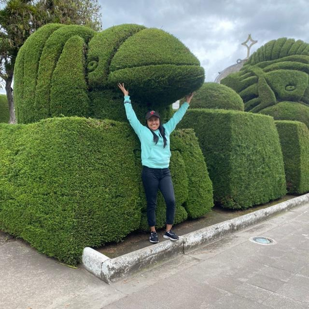
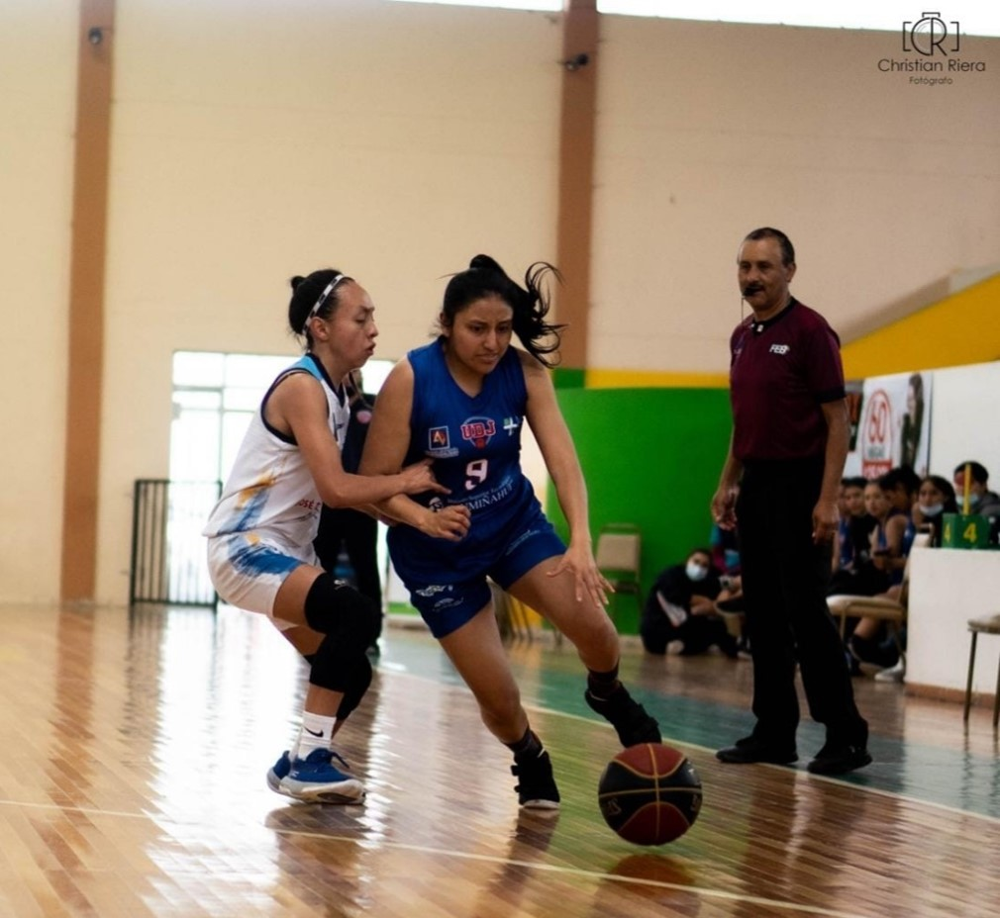

University of the Armed Forces ESPE |
Data from my fellow Web Systems Fundamentals
| Diego Cadena | Robinson Andrade | Freddy Rodriguez | Liliana Chora |
|---|
|  | Her name is Dayana Anchapaxi |
she didn't want to study, because she wanted to enter |
 |